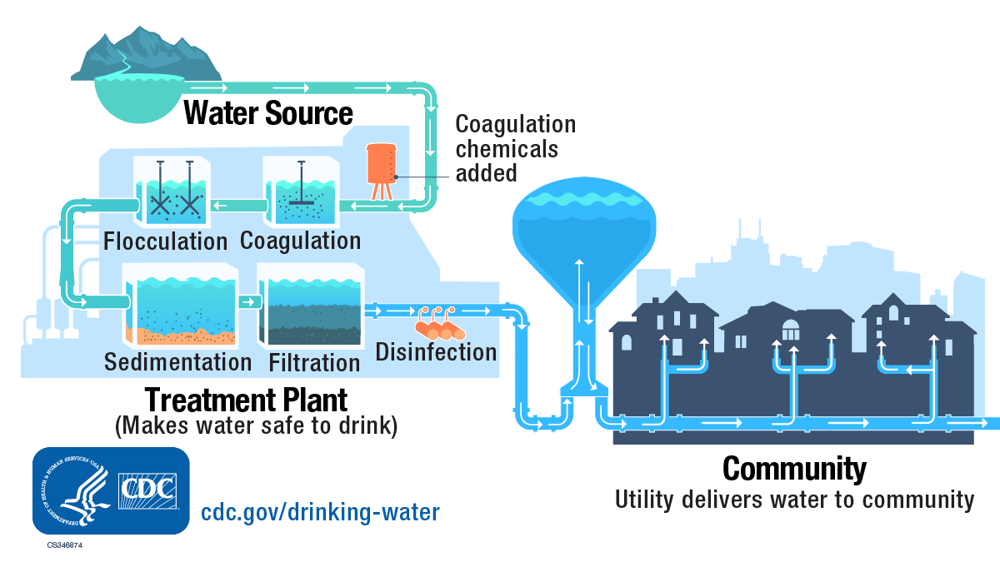

Oct 28, 2026 | 1531 words | 15 min read
6.3.1. MA: Logic and Modularity#
Background#
Fig. 6.1 Blue valves and pumping equipment used to control water flow through a treatment facility. Source: Centers for Disease Control and Prevention [CDC].#
Municipal water treatment facilities use a series of processes to remove contaminants and improve water quality before distributing water to consumers. Engineers monitor water quality throughout the treatment process to evaluate system performance and determine whether adjustments are necessary.
Two commonly monitored water quality characteristics are:
pH: A measure of how acidic or basic water is.
Turbidity: A measure of water cloudiness caused by suspended particles, commonly expressed in nephelometric turbidity units (NTU).
As illustrated in Fig. 6.2, water passes through several treatment stages before distribution. Treatment may include coagulation, sedimentation, and filtration. During coagulation, coagulants help suspended particles combine into larger particles that can be removed in later stages (Centers for Disease Control and Prevention, 2024).


Fig. 6.2 Water passes through treatment stages, including coagulation, sedimentation, and filtration, before distribution.#
A municipal water treatment facility collects measurements at three locations:
Intake, before treatment.
Sedimentation outlet, after sedimentation.
Filtration outlet, after filtration.
The facility wants to automate its water quality analysis. In this assignment, you will develop a MATLAB program to analyze water quality measurements collected at three locations within a municipal treatment facility. Your program will classify water quality, calculate chemical treatment requirements, and evaluate the facility’s operating conditions using selection structures and user-defined functions.
References
Centers for Disease Control and Prevention. (April 22). How water treatment works. https://www.cdc.gov/drinking-water/about/how-water-treatment-works.html
Required Files#
Download the
ENGR 132 Function Template. Create these three MATLAB files:username_water_system_6_3_1.m
username_evaluate_water_6_3_1.m
username_calculate_dose_6_3_1.m
Download the
Report Template, complete it, and save it as username_report_6_3_1.pdf.
Replace username in each function and file name with your Purdue username. Save all three MATLAB files in the same folder.
Programming Standards
Review and reference the MATLAB Programming Standards Guide to ensure your code follows the required formatting and documentation standards, including the use of clear and descriptive comments.
Task 1: MATLAB Functions#
Part 1: Evaluate Water Quality#
Create username_evaluate_water_6_3_1 to classify one water sample using its pH and turbidity measurements.
The function must accept two inputs:
The pH of the water sample.
The turbidity of the water sample, measured in nephelometric turbidity units (NTU).
The function must return two outputs:
A string representing the water quality classification (“Acceptable”, “Moderate”, or “Poor”).
A logical value indicating whether the water sample requires attention.
Use the water quality classification criteria provided in Table 6.13.
Classification |
Conditions |
|---|---|
Acceptable |
6.5 \(\leq\) pH \(\leq\) 8.5 and turbidity \(\leq\) 1 NTU |
Moderate |
6.5 \(\leq\) pH \(\leq\) 8.5 and 1 \(<\) turbidity \(\leq\) 5 NTU |
Poor |
pH \(<\) 6.5 or pH \(>\) 8.5 or turbidity \(>\) 5 NTU |
Use relational and logical operators and selection structures to apply the criteria. Return true for the logical output when the classification is Poor; otherwise, return false. Keep the classification logic in this function so it can be reused at each sampling location.
Part 2: Calculate Chemical Treatment Requirements#
During coagulation, chemicals called coagulants are added to water to help suspended particles combine into larger particles that can be removed during subsequent treatment stages. The amount of coagulant required depends on the turbidity of the incoming water and the volume of water being treated.
Create username_calculate_dose_6_3_1 to calculate the coagulant dosage and the total mass of coagulant required to treat a batch of incoming water.
The function must accept two inputs:
The turbidity of the incoming water, measured in NTU.
The volume of water being treated, measured in liters (L).
The function must return two outputs:
The required coagulant dosage, measured in mg/L.
The total mass of coagulant required, measured in grams (g).
Use the following simplified, hypothetical model to determine the coagulant dosage from the incoming water’s turbidity:
where:
\(D\) is the required coagulant dosage (mg/L).
\(T\) is the incoming water’s turbidity (NTU).
After determining the dosage, use Equation (6.4) to calculate the total mass of coagulant required.
where:
\(m\) is the total mass of coagulant required (g).
\(D\) is the coagulant dosage (mg/L).
\(V\) is the volume of water being treated (L).
Unit Conversions
The division by 1000 accounts for the conversion from milligrams (mg) to grams (g), ensuring the calculated chemical mass is expressed in grams.
Use selection structures to determine the dosage. Calculate the coagulant mass and return both values to the calling function.
Part 3: Create the Main Function#
Create username_water_system_6_3_1 to evaluate water quality at the three sampling locations, calculate the coagulant required, and determine the facility’s operating status.
The function must accept three inputs:
A row vector of pH measurements from the three sampling locations.
A row vector of turbidity measurements from the three sampling locations (NTU).
The volume of water being processed, measured in liters (L).
In both vectors, measurements are ordered as [intake, sedimentation outlet, filtration outlet].
The function must not return any outputs. Instead, it must display a formatted report containing the water quality classifications, chemical treatment requirements, and facility operating status.
Water Quality Evaluation: Call the Part 1 function once for each location, using array indexing to pass the corresponding pH and turbidity measurements. Store the returned classifications and attention flags for use in the facility’s operating status evaluation and final report.
Chemical Treatment Requirements: Call the Part 2 function with the intake turbidity and the specified water volume to calculate the coagulant dosage and total coagulant mass.
Facility Operating Status: The dosing equipment can deliver up to 500 g of coagulant per batch. The facility uses the water quality measurements and chemical treatment requirements to determine its operating status according to the criteria in Table 6.14.
Table 6.14 Facility Operating Status Criteria# Operating Status
Conditions
Review Required
Filtration outlet is Poor or required coagulant mass exceeds 500 g
Additional Treatment
Neither Review Required condition is met, but the intake or sedimentation outlet has Poor water quality
Normal Operation
None of the above conditions are met
Use relational and logical operators and selection structures to determine the status. If more than one condition applies, select the highest-priority status.
Display Results#
Use fprintf to display a formatted water treatment report containing:
The descriptive water quality classification (Acceptable, Moderate, or Poor) at each sampling location.
The required coagulant dosage (mg/L).
The total required coagulant mass (g).
The descriptive facility operating status (Normal Operation, Additional Treatment, or Review Required).
Display the dosage and coagulant mass to two decimal places. All output must be generated by the main function.
Sample Output#
Use the values in Table 6.15 below to test your program.
Case |
pH |
Turbidity (NTU) |
Water Volume (L) |
|---|---|---|---|
1 |
[7.2, 7.1, 7.0] |
[4, 2, 0.5] |
10000 |
2 |
[7.0, 7.0, 7.1] |
[12, 4, 0.8] |
10000 |
3 |
[6.2, 6.8, 7.0] |
[25, 3, 0.7] |
15000 |
4 |
[7.4, 7.2, 7.1] |
[8, 2, 6] |
10000 |
Ensure your program’s output matches the provided samples exactly. This includes all characters, white space, and punctuation. In the samples, user input is highlighted like this for clarity, but your program should not highlight user input in this way.
Case 1 Sample Output
>> username_water_system_6_3_1([7.2, 7.1, 7.0], [4, 2, 0.5], 10000) Water Quality Assessment Intake: Moderate Sedimentation Outlet: Moderate Filtration Outlet: Acceptable
Chemical Treatment Requirements Coagulant Dosage: 10.00 mg/L Coagulant Required: 100.00 g
Facility Operating Status: Normal Operation
Case 2 Sample Output
>> username_water_system_6_3_1([7.0, 7.0, 7.1], [12, 4, 0.8], 10000) Water Quality Assessment Intake: Poor Sedimentation Outlet: Moderate Filtration Outlet: Acceptable
Chemical Treatment Requirements Coagulant Dosage: 24.00 mg/L Coagulant Required: 240.00 g
Facility Operating Status: Additional Treatment
Case 3 Sample Output
>> username_water_system_6_3_1([6.2, 6.8, 7.0], [25, 3, 0.7], 15000) Water Quality Assessment Intake: Poor Sedimentation Outlet: Moderate Filtration Outlet: Acceptable
Chemical Treatment Requirements Coagulant Dosage: 42.50 mg/L Coagulant Required: 637.50 g
Facility Operating Status: Review Required
Case 4 Sample Output
>> username_water_system_6_3_1([7.4, 7.2, 7.1], [8, 2, 6], 10000) Water Quality Assessment Intake: Poor Sedimentation Outlet: Moderate Filtration Outlet: Poor
Chemical Treatment Requirements Coagulant Dosage: 16.00 mg/L Coagulant Required: 160.00 g
Facility Operating Status: Review Required
Task 2: Technical Report#
Analysis Questions#
Complete the provided report template. Answer its analysis questions using evidence from your MATLAB results, including relevant observations and numerical values.
Report Documentation#
Complete all remaining sections of the report template:
Collaboration Disclosure: Identify any collaborators and describe their contributions.
AI Use Disclosure: Document any generative AI use.
Use of Unfamiliar Functions: Document any MATLAB functions not covered in the course materials.
Academic Integrity Statement: Review the ENGR 132 Academic Integrity Policy and complete the acknowledgment.
If you did not collaborate, use generative AI, or use unfamiliar MATLAB functions, indicate this in the corresponding section.
Quick Guide: Saving and Submitting Your Report as a PDF
To complete your technical report, you must edit the provided Word template (.docx) and convert it to a PDF for final grading. Follow this simplified workflow:
Edit in Word: Download and open the
.docxtemplate in Microsoft Word. Avoid editing in web previewers or Google Docs, as they will corrupt your formulas and chart formatting.Save as PDF Only When Finished: Type your answers and copy any charts or images directly into the Word document, saving your progress frequently. Once your report is 100% complete, save or export the document as a PDF. (Do not convert to PDF early, as PDFs are static and cannot be edited.)
Submit to Gradescope: Upload your finalized PDF and any other required deliverables to the corresponding assignment in Gradescope. Always review your uploaded files from the Gradescope confirmation screen to verify your work is complete.
Gradescope Submission#
Save Deliverables: Ensure all required assignment files are saved and named exactly as specified in the assignment instructions. If a template file name contains the word
template, replace only that word with your Purdue username.Navigate to Gradescope: Log in to Gradescope. From your Dashboard, open the assignment.
Upload your work: Select the Upload submission method. Drag and drop all required files (or a compressed
.zipfolder) into Gradescope, and select Upload.Confirm Submission: When your upload is successful, you will see a confirmation message on your screen and receive an automated email receipt.
Add Team Members (if applicable): If this is a team assignment, add all team members to the submission. Each teammate should confirm they can see the submission in their own Gradescope account. For help, visit Gradescope’s documentation on adding team members.
Review Autograder Results: Wait a few minutes for the autograder to evaluate the relevant files. Scroll down to view any failed test cases. If you need assistance interpreting the output or errors, ask your teaching team.
Resubmit if Necessary: You can edit your files and select Resubmit as many times as you need before the assignment deadline. Only your final, active submission is graded. (Note: If you need to resubmit, you must upload all required files for the assignment again).
For a detailed walkthrough, review the official Gradescope Submission Guide.